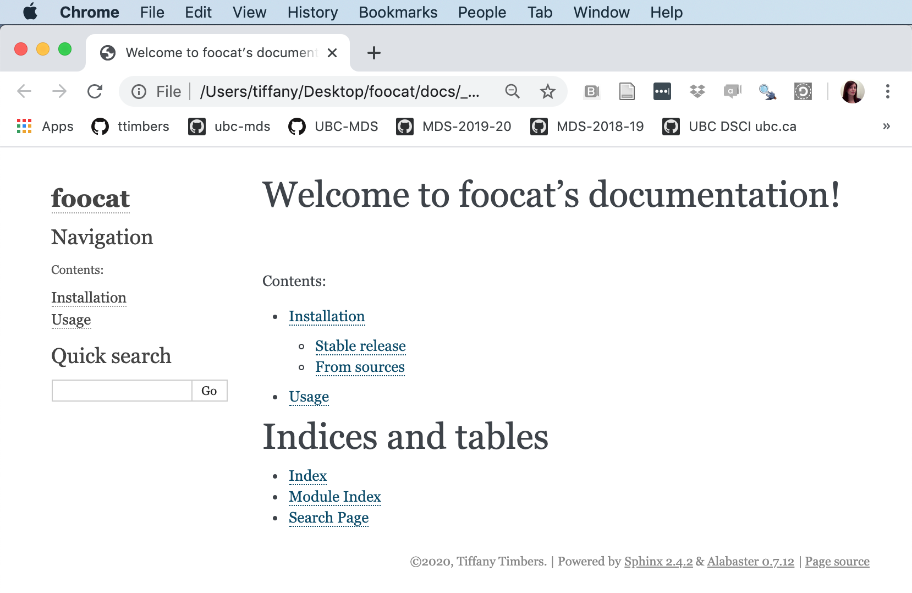
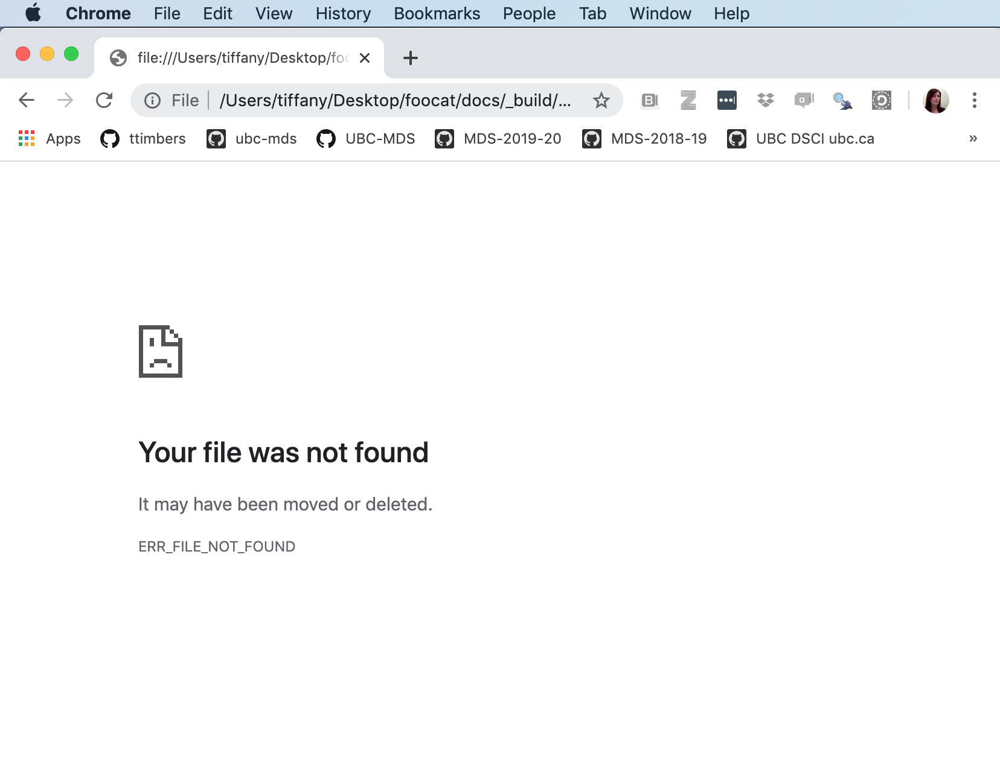

Chapter 2 The Whole Game
This chapter demonstrates how to develop an entire small toy Python package from beginning to end. It’s purpose is to give a high level overview of how a Python package can and should be developed. Later chapters will explore packaging in Python in more detail. This chapter is a Pythonified version of the Whole Game chapter written by Jenny Bryan that can be found in the the R packages book.
2.1 Use Cookiecutter & Poetry to create a Python project
So that we do not have to create a file and directory structure for our project from scratch, we will use Cookiecutter & Poetry to do this for us (which you installed back in 1.1 Installing and updating Python. First, we use Cookiecutter to create the file and directory structure for our Python project (which will be a Python package). We will use a simplified version of the template base by the PyOpenSci organization designed specifically for creating Python packages. PyOpenSci is a not-for-profit organization that promotes open and reproducible research through peer-review of scientific Python packages.
To use Cookiecutter to set up the structure of your Python package, run the line of code below in the terminal from the directory where you would like your package to live.
You will be prompted to provide information that will help customize the project.
In this tutorial we will be calling our package
foocat. However, we will eventually be publishing our package to testPyPI which is a testing version of Python’s main package index PyPI. Package names on testPyPI and PyPI must be unique. As a result, you will need to choose a unique name for your package while following this tutorial. Something likefoocat_[your intials]might be appropriate, but you can always check if your chosen name is already taken by visitng testPyPI and searching that name.
Below is an example of how to respond to the Cookiecutter prompts (default values for each attribute are shown in square brackets, hitting enter will accept the default attribute value):
full_name [Audrey Roy Greenfeld]: Tiffany Timbers
email [audreyr@example.com]: tiffany.timbers@gmail.com
github_username [audreyr]: ttimbers
project_name [Python Boilerplate]: foocat
project_slug [foocat]: foocat
project_short_description [Python Boilerplate contains all the boilerplate you need to create a Python package.]: Python package that eases the pain concatenating Pandas categoricals!
pypi_username [ttimbers]:
version ['0.1.0']:
Select open_source_license:
1 - MIT license
2 - BSD license
3 - ISC license
4 - Apache Software License 2.0
5 - GNU General Public License v3
Choose from 1, 2, 3, 4, 5 [1]: 1You will now have a new directory called foocat. Navigate into the foocat directory and initialize the project as a Poetry project so that we can take advantage of the package management and building tools of Poetry:
Again we are prompted for more information. Once again, default values are shown in square brackets and have been populated where possible from our Cookiecutter template. Here is an example of how to respond the the prompts:
This command will guide you through creating your pyproject.toml config.
Package name [foocat]:
Version [0.1.0]:
Description []: Python package that eases the pain concatenating Pandas categoricals!
Author [ttimbers <tiffany.timbers@stat.ubc.ca>, n to skip]:
License []: MIT
Compatible Python versions [^3.7]:
Would you like to define your main dependencies interactively? (yes/no) [yes] no
Would you like to define your dev dependencies (require-dev) interactively (yes/no) [yes] no
Generated file
[tool.poetry]
name = "foocat"
version = "0.1.0"
description = "Python package that eases the pain concatenating Pandas categoricals!"
authors = ["ttimbers <tiffany.timbers@stat.ubc.ca>"]
license = "MIT"
[tool.poetry.dependencies]
python = "^3.7"
[tool.poetry.dev-dependencies]
[build-system]
requires = ["poetry>=0.12"]
build-backend = "poetry.masonry.api"
Do you confirm generation? (yes/no) [yes]Note - we said no to defining our dependencies interactively because it is more efficient to define them using poetry add which we will explore a bit later on.
After using Cookiecutter and Poetry, we end up with the following directory structure:
foocat
├── CONDUCT.md
├── CONTRIBUTING.md
├── CONTRIBUTORS.md
├── docs
│ └── conf.py
│ └── contributing.rst
│ └── contributors.rst
│ └── index.rst
│ └── installation.rst
│ └── Makefile
│ └── readme.rst
│ └── usage.rst
├── foocat
│ └── __init__.py
│ └── foocat.py
├── .github
│ └── workflows
│ └── build.yml
│ └── release.yml
├── .gitignore
├── LICENSE
├── pyproject.toml
└── tests
├── __init__.py
└── test_foocat.pyThese two simple steps (Cookiecutter + Poetry) have given us a boilerplate file and directory structure suitable for building our Python package. While there are quite a few files in our boilerplate, at this point we only need to worry about a few of these files and directories to get a working package together. Specifically, we’ll be working on:
- the file for us to write out Python functions that our package will distribute (
foocat/foocat.py); - the home for our tests to ensure that our package functions work as we expect they should (
tests/test_foocat.py); and, - the
pyproject.tomlfile that defines our project’s metadata and dependencies and how it will eventually be built and distributed.
Later chapters will focus on the oter components of the boilerplate, which can be used to refine your package and packaging process with, for example, quality documentation, continuous integration testing, version bumping, etc.
Optional for RStudio IDE users
Users of the RStudio IDE may also want to make this Python project directory an RStudio project. Why might you ask? Well, once you have an
*.Rprojfile, you can use that file to quickly open the RStudio IDE (which has a terminal and an interactive Python REPL, assuming you have set this up withreticulate) to the project’s root directory.
2.2 Put your project under version control
It is good practice to put your data science projects under local and remote version control. The tools we recommend using for this are Git & GitHub. For this book, we assume readers have Git installed on their machine, have novice Git skills, and that have a GitHub.com account.
2.2.1 Set-up local version control
From the terminal and in the root foocat directory, we will initialize the repository to be tracked by Git using:
$ git initInitialized empty Git repository in /Users/tiffany/Documents/ubc-mds/foocat/.git/Next, we need to tell Git which files to track (which will be all of them at this point) and commit these changes locally:
$ git add .
$ git commit -m "initial project set-up"[master (root-commit) ca03932] initial project set-up
22 files changed, 798 insertions(+)
create mode 100644 .github/workflows/build.yml
create mode 100644 .github/workflows/release.yml
create mode 100644 .gitignore
create mode 100644 CONDUCT.md
create mode 100755 CONTRIBUTING.md
create mode 100755 CONTRIBUTORS.md
create mode 100755 LICENSE
create mode 100644 README.md
create mode 100755 docs/Makefile
create mode 100755 docs/conf.py
create mode 100755 docs/contributing.rst
create mode 100755 docs/contributors.rst
create mode 100755 docs/index.rst
create mode 100755 docs/installation.rst
create mode 100755 docs/make.bat
create mode 100755 docs/readme.rst
create mode 100755 docs/usage.rst
create mode 100644 foocat/__init__.py
create mode 100644 foocat/foocat.py
create mode 100644 pyproject.toml
create mode 100644 tests/__init__.py
create mode 100644 tests/test_foocat.py2.2.2 Set-up remote version control
Now that we have set up our local version control, let’s create a repository on GitHub.com and set that as the remote version control home for this project:

The options we recommend for setting up a repository for a Python package using the workflow we present in this book include:
- give the GitHub.com repository the same name as your Python Poetry project’s name
- make the GitHub.com repository public
- do not initialize the GitHub.com repository with a README

Next, we set-up the remote address locally, and push our project to GitHub.com:
$ git remote add origin git@github.com:ttimbers/foocat.git
$ git push -u origin masterNote: the example above uses SSH authentication with GitHub, HTTPS authentication works as well and would use this url in place of the one shown above to set the remote:
https://github.com/ttimbers/foocat.git.
2.3 Writing our first function
Pandas categoricals are a very useful data type for modeling (and were inspired by R’s factors), but certain manipulations of this data type can be tricky during data wrangling. One such challenge is concatenation (joining) of Pandas categoricals. Let’s observe the result of trying to concatenate two Pandas categoricals objects:
>>> import pandas as pd
>>> a = pd.Categorical(["character", "hits", "your", "eyeballs"])
>>> b = pd.Categorical(["but", "integer", "where it", "counts"])
>>> pd.concat([a, b])## Error in py_call_impl(callable, dots$args, dots$keywords): TypeError: cannot concatenate object of type '<class 'pandas.core.arrays.categorical.Categorical'>'; only Series and DataFrame objs are validThis occurs because the categoricals are represented as integers in memory, and in a the integer 0 corresponds to the word “character” while in b, the integer 0 corresponds to the word “but”. Thus, when we ask Python to concatenate these two Pandas categorical options it doesn’t know what to do with these integer mappings to different categories, and so it throws an error. We can get around this several ways, one way is to convert the Pandas categoricals to a str type, then do the concatenation, and finally convert the concatenated Pandas obeject to a categorical again. We demonstrate that approach below:
>>> concatenated = pd.concat([pd.Series(a.astype("str")), pd.Series(b.astype("str"))])
>>> pd.Categorical(concatenated)## [character, hits, your, eyeballs, but, integer, where it, counts]
## Categories (8, object): [but, character, counts, eyeballs, hits, integer, where it, your]That seems to work 🎉, but it’s quite a bit of typing every time we want to do this… So let’s turn this code into a function called catbind!
def catbind(a, b):
concatenated = pd.concat([pd.Series(a.astype("str")),
pd.Series(b.astype("str"))])
return pd.Categorical(concatenated)
catbind(a, b)## [character, hits, your, eyeballs, but, integer, where it, counts]
## Categories (8, object): [but, character, counts, eyeballs, hits, integer, where it, your]Note - this book assumes you know how to write, document and test functions in Python. To learn more about this see Think Python, Chapter 3: Functions by Allen Downey.
Where do we save this function if we want it to be a part of our foocat Python package? Let’s review the landscape of our Python project so far:
foocat
├── CONDUCT.md
├── CONTRIBUTING.md
├── CONTRIBUTORS.md
├── docs
│ └── conf.py
│ └── contributing.rst
│ └── contributors.rst
│ └── index.rst
│ └── installation.rst
│ └── Makefile
│ └── readme.rst
│ └── usage.rst
├── foocat
│ └── __init__.py
│ └── foocat.py
├── .github
│ └── workflows
│ └── build.yml
│ └── release.yml
├── .gitignore
├── LICENSE
├── pyproject.toml
└── tests
├── __init__.py
└── test_foocat.pyAll the code that we would like the user to run as part of our package should live inside the foocat directory. Typically, with a relatively small package with just a few functions, we would house them inside a single python module (i.e., a .py file). Our template project directory structure already created and named such a module for us: foocat/foocat.py. Let’s save our function there. Additionally, given that our package depends on the Pandas Python package, we should import Pandas at the top of the foocat.py file. Here’s what foocat.py should now look like:
import pandas as pd
def catbind(a, b):
concatenated = pd.concat([pd.Series(a.astype("str")),
pd.Series(b.astype("str"))])
return pd.Categorical(concatenated)
2.4 Test drive your package code
To test drive the function we just wrote we first install the package locally using Python poetry. We choose to do this with Python Poetry as opposed to using Python’s native package manager pip because Poetry automatically creates a virtual environment for us and will perform tricky tasks like package solving that can sometimes trip us up when we use pip alone.
$ poetry installCreating virtualenv foocat-z0_J6H1I-py3.7 in /Users/tiffany/Library/Caches/pypoetry/virtualenvs
Installing dependencies from lock file
No dependencies to install or update
- Installing foocat (0.1.0)Now, inside this project directory, we can open an interactive Python session (using python at the CL) and import our foocat module which contains our catbind function as shown:
The foocat module has now been mapped to the current session’s namespace and we can access the catbind function in our Python session using dot notation: foocat.catbind (note that if you wanted to import a specific function, rather than the whole module, you could do from foocat.foocat import catbind, in which case “dot notation” would not be required to use the function). Let’s try to use the function to concatenate two Pandas categoricals:
>>> import pandas as pd
>>> a = pd.Categorical(["character", "hits", "your", "eyeballs"])
>>> b = pd.Categorical(["but", "integer", "where it", "counts"])
>>> foocat.catbind(a, b)[character, hits, your, eyeballs, but, integer, where it, counts]
Categories (8, object): [but, character, counts, eyeballs, hits, integer, where it, your]Hurray again! This seems to work as expected! Now that we have something working, let’s commit this to version control:
$ git add .
$ git commit -m "First working version of catbind function"[master b80dea8] First working version of catbind function
1 file changed, 7 insertions(+)2.5 Add package function dependencies
Our function depends on the Pandas package, and without it, it would fail to work. Thus we need to record this dependency in a useful place so that when we publish our pacakged code this important information (and the mechanism for making it work) will be shipped along with it. We again use poetry to do this, using the add command. This command will update the [tool.poetry.dependencies] section of the pyproject.toml file which currently looks like this and lists only Python as a project dependency:
[tool.poetry]
name = "foocat"
version = "0.1.0"
description = "Python package that eases the pain concatenating Pandas categoricals!"
authors = ["ttimbers <tiffany.timbers@stat.ubc.ca>"]
license = "MIT"
[tool.poetry.dependencies]
python = "^3.7"
[tool.poetry.dev-dependencies]
[build-system]
requires = ["poetry>=0.12"]
build-backend = "poetry.masonry.api"Let’s add our Pandas dependency now:
$ poetry add pandasUsing version ^1.0.1 for pandas
Updating dependencies
Resolving dependencies... (0.1s)
Writing lock file
Package operations: 4 installs, 1 update, 0 removals
- Updating six (1.14.0 /usr/local/Cellar/poetry/1.0.3/libexec/vendor/lib/python3.7/site-packages -> 1.14.0)
- Installing numpy (1.18.1)
- Installing python-dateutil (2.8.1)
- Installing pytz (2019.3)
- Installing pandas (1.0.1)Now if we view our pyproject.toml file we see that pandas is now listed as a dependency:
[tool.poetry]
name = "foocat"
version = "0.1.0"
description = "Python package that eases the pain concatenating Pandas categoricals!"
authors = ["ttimbers <tiffany.timbers@stat.ubc.ca>"]
license = "MIT"
[tool.poetry.dependencies]
python = "^3.7"
pandas = "^1.0.1"
[tool.poetry.dev-dependencies]
[build-system]
requires = ["poetry>=0.12"]
build-backend = "poetry.masonry.api"This changed two files, pyrpoject.toml (which we printed above) and poetry.lock (a record of all the packages and exact versions of them that poetry downloaded for this project). These changes are important for our package, so let’s commit them to version control as well:
$ git add .
$ git commit -m "added pandas as a dependency"[master f5c146d] added pandas as a dependency
2 files changed, 108 insertions(+)
create mode 100644 poetry.lockFor those of you who have used
requirements.txtbefore withpip, you can think ofpoetry.lockas thepoetryequivalent of that file. You can even generate arequirements.txtfrom poetry viapoetry export -f requirements.txt > requirements.txtif needed.
2.6 Package documentation
2.6.1 Reading and rendering the docs locally
For the users of your code (include your future self!) we need to have readable and accessible documentation expressing how to install your package, and how to use the user-facing functions within it. The Python packaging ecosystem has a tool to help you make this process more efficient - Sphinx. In the Cookiecutter template we provided you to set-up this package, there is a basic docs template that the Cookiecutter progam filled in with the information you entered interactively when you ran cookiecutter https://github.com/UBC-MDS/cookiecutter-ubc-mds.git. These files live in the doc directory and are .rst (reStructuredText markup language) filetype. This is a lightweight markup language that works similar to Markdown but uses different syntax. The templates provided to you here are fairly well formatted already, so you do not have to change the .rst formatting, however if you are interested in doing so, you can see this CheatsSheet to get started.
First, we need to install sphinx as a development dependency using poetry.
$ poetry add --dev sphinxNote the use of
--devto specify a development, rather than a package function dependency. If you look inpyproject.tomlyou will see thatsphinxgets added under the[tool.poetry.dev-dependencies]section as opposed to the[tool.poetry.dependencies]section (where package function dependencies get installed, such as pandas in this example).
Next, to render the help documents locally from .rst to .html we navigate into the docs directory and then run the Makefile there, directing it to run the .html target:
$ cd docs
$ poetry run make htmlNote 1: we append
poetry runinfront of most of our commands in this Python package workflow so that we ensure we are using the software tools installed in thepoetryvirtual environment.
Note 2: you may see many red warnings, these can be ignored and are meerely suggestions on how to improve your docs if you wish.
If we now look inside our docs directory we see that it has expanded, and the rendered .html files live in _build/html. We can open _build/html/index.html to view our docs locally on our laptop, they should look something like this:

If we click on the “Module Index” link under the heading “Indices and tables” we get a “Your file was not found message”:

This is because we haven’t written any documentation for our package function. Let’s do that now by adding a numpy-style docstring to the catbind function in foocat/foocat.py as shown below:
import pandas as pd
def catbind(a, b):
"""
Concatenates two pandas categoricals.
Parameters
----------
a : pandas.core.arrays.categorical.Categorical
A pandas categorical.
b : pandas.core.arrays.categorical.Categorical
A pandas categorical that you wish to concatenate to a.
Returns
-------
pandas.core.arrays.categorical.Categorical
The new concatenated pandas categorical.
Examples
--------
>>> from foocat import foocat
>>> a = pd.Categorical(["character", "hits", "your", "eyeballs"])
>>> b = pd.Categorical(["but", "integer", "where it", "counts"])
>>> foocat.catbind(a, b)
[character, hits, your, eyeballs, but, integer, where it, counts]
Categories (8, object): [but, character, counts,
eyeballs, hits, integer, where it, your]
"""
concatenated = pd.concat([pd.Series(a.astype("str")),
pd.Series(b.astype("str"))])
return pd.Categorical(concatenated)Now we can use a sphinx extension (napolean) in combination with autodoc to render our numpy-styled docstring into a modules page on our docs. To do this we need to install another dev dependency:
$ poetry add --dev sphinxcontrib-napoleonNote - to use this, we also have to add
extensions = ['sphinx.ext.napoleon']in theconf.pyfile in thedocsdirectory, but we have taken care of this for you with our Cookiecutter template.
Then we can change back to our root foocat directory, use sphinx-apidoc and poetry to re-render our docs:
$ cd ..
$ poetry run sphinx-apidoc -f -o docs/source foocat
$ cd docs
$ poetry run make htmlNow when we click on the “Module Index” link under the heading “Indices and tables” we see a webpage that has a link to our module, foocat.foocat:

And we can click on that to see the docs for foocat.foocat.catbind. Which should look roughly like this:

Another hurray! 🎉🎉🎉 Let’s commit this to version control and push to our remote:
$ cd ..
$ git add .
$ git commit -m "generated and render docs for local viewing"
$ git push[master ae68b4e] generated and render docs for local viewing
5 files changed, 471 insertions(+), 8 deletions(-)
rewrite foocat/foocat.py (77%)
create mode 100644 docs/source/foocat.rst
create mode 100644 docs/source/modules.rst2.6.2 Reading and rendering the docs remotely
To share these docs online, we need to link our GitHub repository to Read the Docs (where we will build and host our docs remotely). To do this:
- Visit https://readthedocs.org/ and click on “Sign up”;
- Select “Sign up with GitHub”;
- Click “Import a Project”;
- Click “Import Manually”;
- Fill in the project details by providing a package name (this must be a unique name, we’ve already taken “foocat” so perhaps try “foocat[your initials]”), the repository URL, and leave the rest as is. Click “Next”;
- Click “Build version”.
After following the steps above, your docs should get successfully built on Read the Docs and you should be able to access them via the “View Docs” button on the build page, or from the link that Cookiecutter created for your on your repositories README.md file.
Note: for Read the Docs to work with the
poetrypackage workflow you need to have a.readthedocs.ymlin the root of your Python package. We have created this for you using Cookiecutter and you can view it here.
2.7 Testing
We have interactively taken catbind for a test drive, but to prove to our future self and others that our code does in fact do what it is supposed to do, let’s write some formal unit tests. In Python packages, our tests live inside the test directory, typically in a file called test_<module_name>.py, thus for this package this is tests/test_foocat.py. Let’s add a unit test (as a function named test_catbind) for our catbind function there now:
from foocat import foocat
import pandas as pd
def test_catbind():
a = pd.Categorical(["character", "hits", "your", "eyeballs"])
b = pd.Categorical(["but", "integer", "where it", "counts"])
assert ((foocat.catbind(a, b)).codes == [1, 4, 7, 3, 0, 5, 6, 2]).all()
assert ((foocat.catbind(a, b)).categories == ["but", "character",
"counts", "eyeballs", "hits", "integer", "where it", "your"]).all()
Note - given that we use
pd.Categoricalto create objects to test on, we have to import thepandaspackage in our test file.
We only have a single function to test for this package, and so we could run this file by opening up an interactive Python session, importing the file, and then calling the test_catbind function. But as our packages have more and more functions, and more and more modules (or submodules) then we want to automate this workflow. In the Python package ecosystem one way we can do this is to use pytest. A single call to pytest from the root of a project will look for all files in the tests directory, import all files prefixed with test* and then call all functions prefixed with test*. Pretty nice eh?
To do this, we first add pytest as a dev dependency via poetry:
$ poetry add --dev pytestThen to run the tests, we use poetry to run pytest in our virtual environment:
$ poetry run pytestWe get no error returned to us, indicating that our tests passed, Hurray! This suggests that the code we wrote is correct (at least to our test specifications)! Now we can share this with the world by putting these under local and remote version control:
$ git add .
$ git commit -m "added unit tests for catbind"
$ git pushNote: It is very possible that your tests are correct and your function passes the tests yet the build button on the GitHub repository README still says “build: failing”. This is because the build continuous integration has more checks than just whether the tests pass, for example, it also checks code style using a tool called
flake8. This and the other build checks are the subject of later chapters in this book.
2.8 Building your package and publishing to testPyPI
Python packages are generally shared via the PyPI package index. However, when we are just starting to develop packages, and/or at the development stage of our package, we typically first check that everything works by submitting to testPyPi. poetry has a command called publish which we can use to do this, however it’s default is to publish to PyPI. We can add this to the list of repositories poetry knows about via poetry config repositories.<your_project> https://test.pypi.org/legacy/ as shown below:
$ poetry config repositories.foocat https://test.pypi.org/legacy/Before we send our package, we first need to build it to source and wheel distributions (the format that PyPI distributes and something you’ll learn more about in the next chapter Package structure and state) using poetry build:
$ poetry buildAnd, finally, now to publish to testPyPI we can use poetry publish (you will be prompted for your testPyPI username and password, sign up for one if you have not already done so):
$ poetry publish -r test-pypiNow you should be able to visit your package on testPyPI (e.g., https://test.pypi.org/project/foocat/) and download it from there using pip via:
pip install -i https://test.pypi.org/simple/ foocat